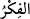
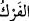
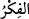

mi?” Tefekkür/düşünme, taleb edilen şeyi elde etmek için kalbin eşyânın mânâları
hakkında tasarrufta bulunmasıdır. Tefekkür, lübbün sâfiyet kazanmasından öncedir.
Tezekkür ise ondan sonradır. Bu sebeple Allah Teâlâ’nın Kitabı’nda lübb ile birlikte
tezekkürden başkası zikredilmemiştir.
Ediblerden biri şöyle demiştir: “__WORD__ kelimesi “__WORD__ (ovmak, sürtmek)” kelimesinin
maklûbu/harflerinin yeri değiştirilmiş şeklidir. Fakat “__WORD__ kelimesi mânâlarda
kullanılır. İşlerin hakikatına ulaşma talebiyle onları birbirine sürtmek ve araştırmaktır.
Düşünme ve bilme, Yaratan ile değil yaratılmışlarla ilişkilendirilmiştir. Çünkü Allah
Teâlâ kalbde bir sûret olarak vasfedilmekten münezzehdir. Bu yüzden şöyle rivâyet
edilmiştir: “Allâh’ın nîmetlerini düşünün, Allâh’ın zâtını düşünmeyin.”[10]
Mesnevî’de der ki:
Yönleri olan, ancak yaratılmışlar âlemidir.
Bil ki emir ve sıfatlar âlemi yönsüzdür.
Hiçbir yaratık ondan bağımsız değildir.
Efendim, işte bu bağımlılık sorgusuz sualsizdir.
Bu bağlılığa akıl nasıl kılavuzluk etsin?
O ayrılığa bağımlıyken akıl kavuşmuştur.
Bu yüzden Mustafa, “Allâh’ın zâtını pek tartışmayın”
Diye bizi öğütlemiştir.
O’nun zâtı üzerinde düşünen kimse,
Zâtı göz önünde bulundurmaz aslında.
O öyle sanmaktadır. Çünkü bu yolda
Allâh’a varıncaya dek yüz binlerce engel vardır.
Herkes kendine özgü bir perdeye takılır
Da bu perdenin O’nun kendisi olduğunu sanır.
Bu yüzden Peygamber, yanlışa tutulmasın diye
İnsanın bu vehmini ortadan kaldırmıştır.
O’nun mûcizelerini düşünmeye dalıp
Ululuk ve görkeminin tesiriyle kendinizden geçin.
O’nun yaratışı karşısında kibrini yok eden,
Haddini bilip yaratıcıyı tartışmaktan vazgeçer.
O ancak canla başla “Övmeye gücüm yetmez” der.
Çünkü bu övgü sayıya, ölçüye sığmaz.
Allah Teâlâ’nın isimlerinden el-Hakk isminin mânâsı, zevâl, yokluk ve değişiklik
kabul etmeyecek şekilde varlığı sâbit demektir. Onun için sûfîlerden fenâ ehlinin dilleri
çoğu zaman el-Hakk ismini zikreder. Çünkü onlar kendi nefsinde helâk olucu ve kendi
zâtında bâtıl olan mâsivayı (Allah Teâlâ dışında herşeyi) değil hakîkî/gerçek zâtı
dikkate alırlar.